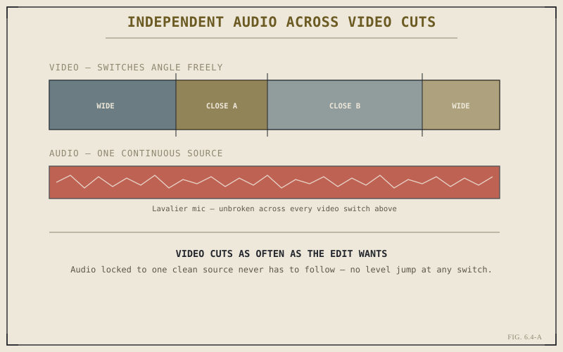

Chapter 6.3 closed on a question it deliberately left open: when a live pass switches the active video angle a hundred times across an interview, what happens to the audio at each of those switches? The honest answer is that it depends entirely on a choice you make, not on anything Resolve decides automatically — and getting that choice wrong is one of the fastest ways to make an otherwise well-cut multicam sequence sound amateurish.
Following Video vs. Independent Audio
A multicam clip offers two fundamentally different ways to handle audio. It can follow video, where switching the active angle also switches which angle's audio track plays — audio and picture always come from the same source. Or it can run independent of video, where one designated audio source stays active continuously regardless of which video angle is currently showing, unaffected by however many video switches happen around it. Which of these is correct depends entirely on what actually produced the audio on each angle in the first place, which is why this is a decision worth making deliberately rather than accepting whatever the default happens to be.
Why You Almost Always Want One Continuous Audio Source
For the most common multicam scenario this book has used as its running example — a two- or three-camera interview — following video is almost always the wrong choice. Every camera in that setup typically has its own on-camera microphone, capturing the same room from a slightly different position with a slightly different level, tone, and amount of handling noise. Letting audio follow video means every single angle switch also produces a small, audible jump in the sound — a discontinuity a viewer registers even when they can't articulate what changed. Locking audio independently to one clean, continuous source, usually a lavalier or boom feed recorded separately from any camera, means video can cut as often as the edit wants while the audio underneath never breaks stride.

Video can cut freely; audio locked to one continuous source never has to.
An audience forgives frequent cuts far more easily than it forgives audio that jumps every time picture does. Locking audio to one continuous source is what lets video cut as freely as a live pass wants to.
When Per-Angle Audio Is Actually the Right Choice
The following-video default isn't wrong everywhere — it's wrong specifically when every angle is recording a version of the same sound. That assumption breaks down in setups like a multi-camera concert or stage performance, where a camera positioned near the crowd and a camera positioned near the stage monitors can be capturing meaningfully different audio, and switching to the crowd camera's audio precisely when you cut to a crowd shot is often the intended, honest effect rather than a discontinuity to hide. The distinction to carry forward: independent audio is the default worth reaching for whenever multiple angles are really documenting one shared sound source, and following video is worth reaching for whenever each angle's audio is meaningfully, intentionally its own thing.
Setting the Audio Source Inside the Multicam Clip
Practically, this is set per multicam clip rather than negotiated cut by cut: you designate which audio behavior the clip should use, and every angle switch made afterward respects that setting automatically. Choosing this once, correctly, before doing a live cutting pass means the pass itself can stay focused entirely on picture — exactly the fast, uninterrupted workflow Chapter 6.3 described — without needing to think about audio consequences on every single switch.
That closes the practical core of multicam work: solving the reviewing problem, building the synced clip, cutting it live, and getting its audio right. Chapter 6.5 closes out Part VI with a lighter-weight alternative worth knowing even once multicam itself is second nature — Group Clips, for situations that don't quite call for multicam's full structure.
Key Concepts to Remember
- Multicam audio can follow the active video angle or run independently from one continuous source — this is a deliberate choice, not an automatic behavior.
- For interviews and dialogue, independent audio from one clean source avoids the audible level jumps every video-following switch would introduce.
- Following-video audio earns its place when angles genuinely capture different sound, like a crowd camera versus a stage-monitor camera at a concert.
- Audio behavior is set once per multicam clip, so a live cutting pass can stay focused entirely on picture.
Cross-References Forward
| → Ch. 6.5 | Group Clips as an Alternative to Multicam — closing Part VI with a lighter structure for situations multicam overserves. (Not yet published.) |
| → Ch. 6.3 | Revisit live angle-switching now that its audio consequence — and how to avoid it — is concrete. |
| → Pt. VIII | Audio Editing & Fairlight — the broader audio work this chapter has only touched from a multicam angle. (Not yet published.) |